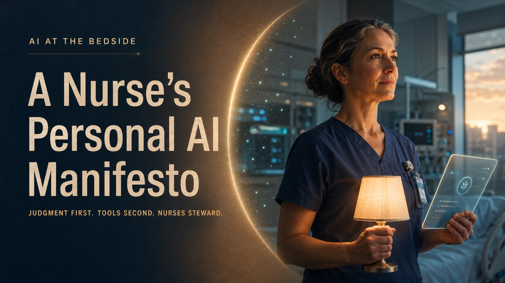
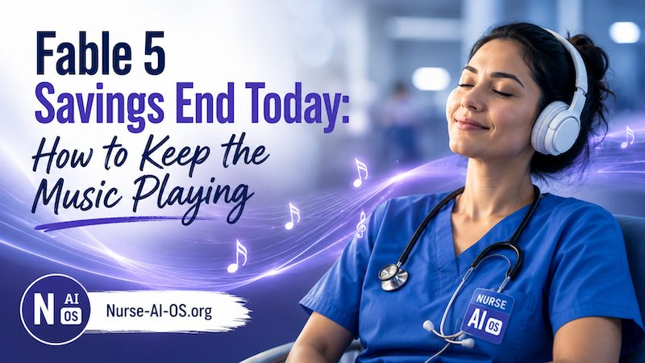

Vital signs of the AI world
The bulletin board by the station. Trends, news, and headlines that matter to nurses — each with a quick read on why it matters. Glance at it the way you'd glance at the telemetry monitor: often, briefly, and with your judgment awake.
Latest readings
July 19, 2026 · Gamma · Nurse AI OS
A visual guide to three practical Hermes moves: learn from community builders, launch a morning briefing agent, and explore overnight automation patterns.
Open the visual guide →
July 12, 2026 · LinkedIn · Robert Domondon
A bedside declaration for the nurse–AI relationship: judgment first, tools second, nurses steward. Personal AI should carry load without taking the nurse’s clinical judgment, accountability, or human primacy out of the loop.
Read the full article on LinkedIn →July 11, 2026 · Nurse AI OS · Robert Domondon
A chatbot answers questions; an operating system carries load. For nurses: what memory-with-rules, skills-with-boundaries, and a hard no-PHI line actually change about using AI — and why the discipline came from nursing in the first place.
Read the article →July 11, 2026 · Nurse AI OS · Robert Domondon
For the AI-governance crowd: we ran three-vote adversarial verification against our own research — 24 of 25 claims survived, and the one that didn't was in our marketing, so we corrected the marketing. Mechanical gates, signed releases, and why the professions that have managed risk for a century are a source of the governance conversation, not just an audience.
Read the article → · The full Architecture Report →
July 7, 2026 · LinkedIn · Robert Domondon
As the Fable 5 launch savings expire, Robert makes the case that what you truly own isn't the model or the subscription — it's the process wrapped around them, packaged here as the free Setup Kit and its Architect Mode skill.
Read the article on LinkedIn → · Get the Setup Kit →